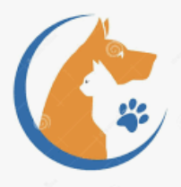

Each year, it's estimated that more than one million adoptable dogs and cats are euthanized in the United States, simply because too many pets come into shelters and too few people consider adoption when looking for a pet.
The number of euthanized animals could be reduced dramatically if more people adopted pets instead of buying them. When you adopt, you save a loving animal by making them part of your family and open up shelter space for another animal who might desperately need it.